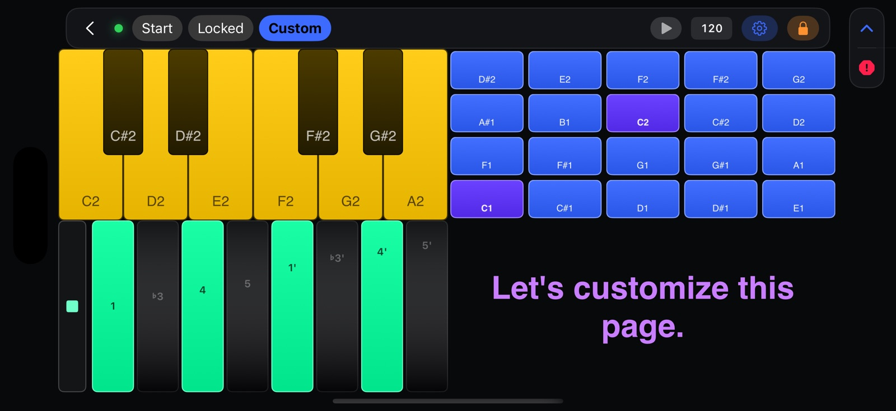
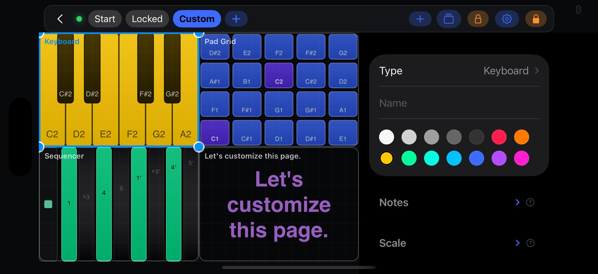
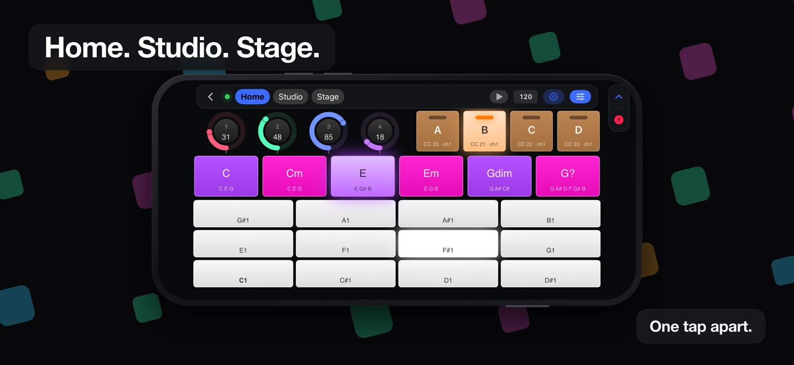
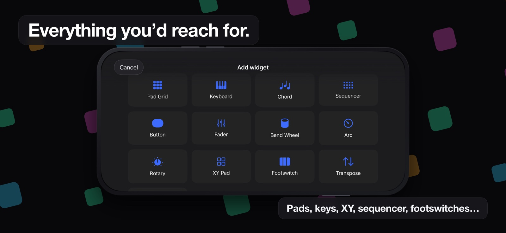
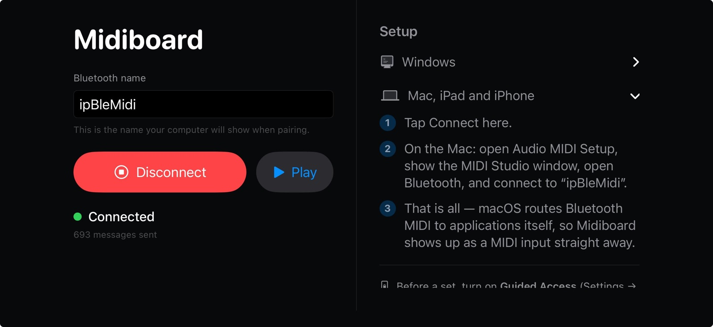

Midiboard turns an iPhone into a Bluetooth MIDI controller you lay out yourself — pads, keys, chords, wheels, XY pads and faders, arranged on screens you build and flip between mid-set. Every other phone controller hands you someone else's idea of a surface. This one hands you the grid.
iPhone · landscape · Bluetooth LE MIDI · no cable, no dongle, no account

Drop a widget on the grid, drag it where your hand goes, size it to the reach you actually have. Save the screen. Build the next one. A set is a handful of screens and one tap between them — not a menu you go hunting through while the song is running.
Any size. Rows can count chromatically, or step in fourths, fifths, thirds or octaves — a grid tuned in fourths keeps every chord shape the same wherever you move it.
A piano roll of any span, starting on any note. Slide between keys for a glissando; the black and white pattern stays put when you transpose, the way hardware does.
Write the notes yourself. C, E, G♯, D is as valid as a minor triad. Transpose and the whole voicing moves with it — the shapes worth a button are usually the ones with no name.
Pitch and mod wheels shaped like the ones next to your keyboard, 270° arcs, endless rotaries, faders and two-axis pads. Spring back to centre or hold where you left them.
Tag a widget to a group and give that group its own −/+ control. A bass bank and a lead keyboard on the same page move independently, and one tap puts either back to zero.
Set the key per widget. Notes outside it either dim and lose their labels — still playable, just no longer shouting — or snap to the nearest note inside it, so nothing wrong can be hit.

A controller is only as good as the things it does not do to you halfway through a song. Most of the work here went into the failure cases.


Midiboard advertises itself over Bluetooth LE MIDI under a name you choose — so it shows up as Midiboard in the list, not as "iPhone". From there it is an ordinary MIDI source.
